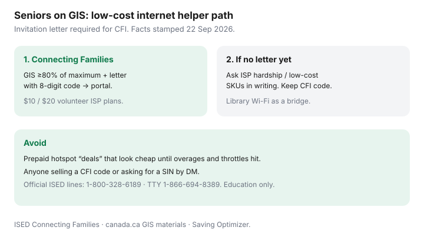

Internet · Canada
Low-Cost Internet for Canadian Seniors on GIS: Connecting Families and ISP Hardship Options
Canadian seniors on the Guaranteed Income Supplement (GIS) still overpay for home internet — or go without — because the cheap path is paperwork, not a flyer. Adult children and neighbours can help without becoming the ISP. This is a family helper checklist: Connecting Families first, then hardship and low-cost retail asks, then bridges that do not trap anyone in a prepaid hotspot.
For the full CFI walkthrough, use our Connecting Families guide. Facts here are stamped 22 Sep 2026 against ISED and canada.ca framing; always re-check the official pages before you enrol.
Disclosure: No ISP partnership and no debt-relief or “guaranteed approval” affiliate. Offer types only (low-cost ISP plan categories). Nobody legitimate needs to buy your parent’s Connecting Families code. Education only — not legal or benefits advice.
Key takeaways
- Connecting Families for seniors: at least 80% of maximum GIS and a Government of Canada invitation letter with an 8-digit code.
- Illustrative CFI plans: $10 (about 10 Mbps / 100 GB) and $20 (about 50/10 Mbps / 200 GB) from participating volunteer ISPs — plus tax; verify live on ISED.
- Enrol on the official portal, then finish with the listed ISP. Do not start at a retail store asking for a secret SKU.
- If no letter or no ISP at the address: ask about hardship / low-cost plans in writing; use library and community Wi-Fi as bridges.
- Treat prepaid home-hotspot marketing as a trap until you add overages, throttles, and a year’s true cost.
Connecting Families and similar programs—eligibility overview (verify at draft)

ISED’s Connecting Families Initiative is invitation-based. Households do not “apply with a PDF of a GIS stub” at a mall kiosk. Typical senior path (verify on ISED pages date-checked around 22 Sep 2026):
- Receive GIS at at least 80% of the maximum (ISED points to GIS estimators on canada.ca).
- Receive a letter (Government of Canada / Service Canada branding, address, Month Year date, unique 8-digit code, Connecting Families subject).
- Register on the Connecting Families portal with the code and the printed name/address, then choose a participating ISP and complete their $10 or $20 plan.
Speeds and data are modest on purpose. A household of video-callers can burn 200 GB. Ask the ISP which CFI tier fits. Mid-initiative switching rules are strict on ISED’s materials — read before you churn for a $5 “deal.”
GIS and senior household documentation tips
- Photograph the 8-digit code and store it offline; lost-code recovery goes through official channels, not Facebook Marketplace.
- Keep a recent GIS / OAS correspondence packet and photo ID for the ISP’s enrolment step.
- If the senior moved, ISED materials still emphasise using the letter address in the portal first, then updating — do not invent a workflow.
- Power of attorney or helper calls: ask what the ISP will accept before you spend an afternoon on hold with the wrong authority.
- Scam check: anyone selling codes, requesting a SIN by text, or demanding gift cards is not ISED.
ISP hardship and low-cost plans to ask about
When CFI is unavailable (no letter yet, no participating ISP at the wire, or rural gap), ask the incumbent and one independent:
- “Do you have a low-income, senior, or hardship home-internet plan at this address?”
- Get monthly price, speed, upload, data, term length, ETF, modem fees, and whether the plan is promotional.
- Compare a 12-month total to a mid-tier flanker or independent on the same last mile — hardship is not automatically cheapest.
- Remember: CRTC 2026-43 activation/modification fee rules and Internet Code notice rules still matter; an ETF on a fixed term can still apply when leaving early.
Library and community Wi-Fi as bridges
Public libraries, seniors’ centres, and municipal Wi-Fi can bridge banking and telehealth uploads while paperwork clears. Download large telehealth apps on library Wi-Fi. Do not put passwords into shared computers — use the senior’s phone hotspot tether only if data allows, or a USB session you control. A bridge is temporary; diary the CFI or hardship follow-up date.
Avoid prepaid hotspot traps that look cheap
| Pitch | What to add before you buy |
|---|---|
| “Unlimited” stickers | Soft caps, deprioritisation after X GB, video throttle footnotes |
| Low monthly | Device instalments, SIM fees, overage, tax, replacement insurance |
| Grandchildren video | Upload and latency on cellular; evening cell load in apartments |
| No credit check marketing | Still read the term and cancellation rules; prepaid is not risk-free |
A family helper checklist to set this up
- Confirm GIS status and watch the mail for a Connecting Families letter (photograph the code).
- Run the official portal; list participating ISPs at the service address.
- If listed: enrol, finish ISP identity checks, test speed on day three, calendar the first bill.
- If not listed: call incumbent + one independent for hardship/low-cost; write totals.
- Set a library/community bridge for essential tasks only.
- Decline prepaid “home internet in a box” until a true 12-month CAD beats the wired quote.
- Store passwords in a shared family manager the senior consents to — not a sticky note on the router.
Sources & date stamps
- ISED Connecting Families Initiative — eligibility (max CCB; seniors at ≥80% maximum GIS), plans, portal, and contact lines (facts stamped 22 Sep 2026; re-check date-modified stamps on ISED pages).
- canada.ca — Guaranteed Income Supplement overview and estimators linked from CFI materials.
- CRTC Internet Code and 2026 fee decisions context — contracts, notices, remaining ETF issues on fixed-term internet.
- Saving Optimizer: Connecting Families Initiative explained.
Frequently asked questions
My parent is on GIS. Can they just call the ISP for the $10 plan?
Usually no. Connecting Families enrolment starts with a Government of Canada invitation letter and an 8-digit code on ISED’s portal — not a store secret SKU. Eligibility for seniors is framed as at least 80% of maximum GIS plus the letter.
What if the letter never arrived?
Confirm GIS criteria, then contact the Connecting Families team / ISED contacts published on the initiative site. Codes are unique; do not buy a code from a stranger. A community helper line is also cited on CFI materials (verify the current number on the official page).
Do ISP hardship plans replace Connecting Families?
They are a parallel ask when CFI is unavailable at the address or while you wait. Get the monthly rate, speed, data, term, and ETF in writing. Hardship SKUs change and are not standardised nationally.
Is a prepaid phone hotspot a good senior home internet plan?
Rarely as a primary home connection. Soft caps, throttles, and overage traps make “cheap” look expensive after video calls with grandchildren. Use hotspots as a short bridge, not the end state.
Can Starlink use Connecting Families pricing?
CFI is volunteer wired ISPs on ISED’s participating list. Do not assume a $10 satellite SKU exists. Keep the letter and check the portal.